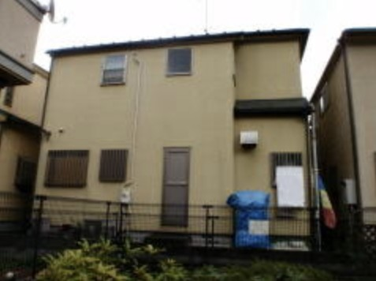
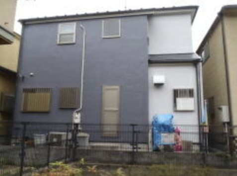
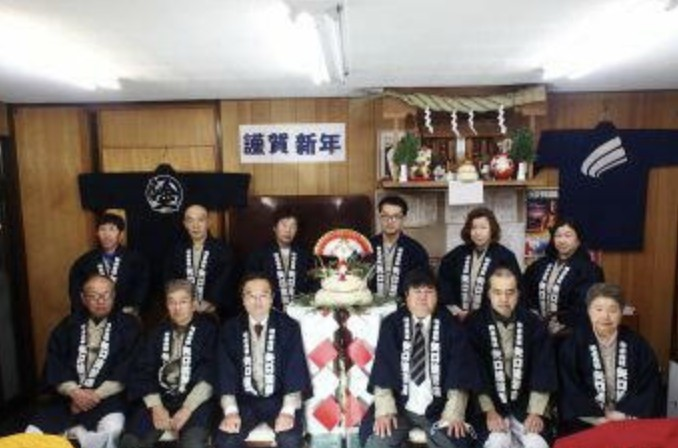
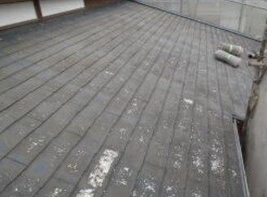
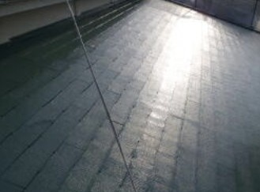
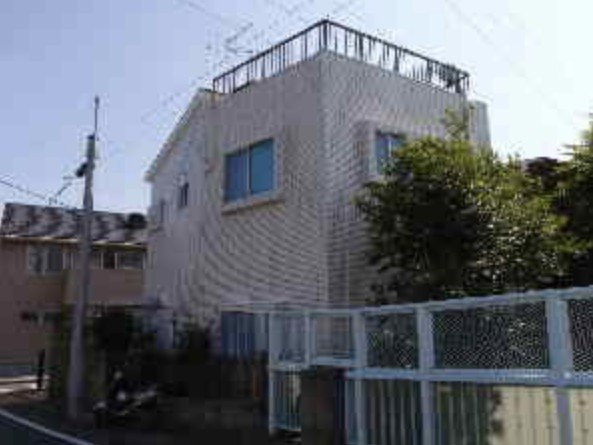
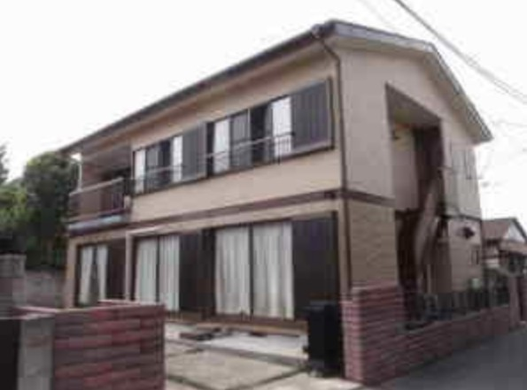
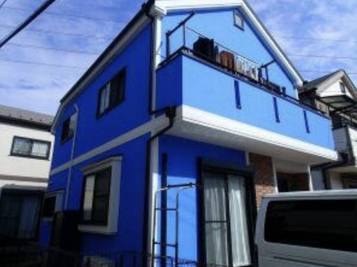
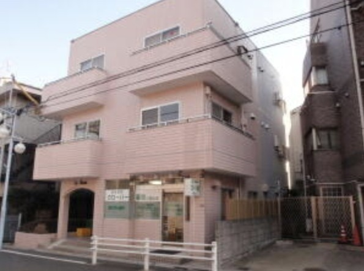

施工前戸建住宅|外壁の塗り替え
外壁の色を変えて、お住まいの印象を一新しました。
足場から塗装まで、自社の職人が一貫して。塗装店には珍しい一級建築士事務所として、建物の状態から見た塗り替えをご提案します。
昭和35年、先代の矢口光好が杉並区高円寺で始めた小さな塗装店が、私たちの出発点です。昭和38年に久我山へ移り、昭和43年に株式会社矢口塗装店となりました。
それから60年あまり。地元のお客様に支えられながら、「納期厳守・信用第一」と「木目細かいサービス」を守り続けてきました。
株式会社 矢口塗装店

平成13年に、塗装会社には珍しい一級建築士事務所の登録をしました。一級建築士や施工管理技士が、塗膜の傷みだけでなく建物の状態まで見て、塗り替えの方法を考えます。
平屋や2階建て住宅の塗り替えは、足場を組むところから仕上げまで自社の職人が行います。外注に丸投げしないので、現場の責任がはっきりしています。
お見積りがご予算に合わないときも、そこで終わりにはしません。ご予算の中でできる最適な施工方法を、一緒に考えてご提案します。
戸建住宅やアパート・マンション、店舗に加えて、役所からのご依頼で学校や街路灯の塗装も手がけてきました。公共の仕事で培った品質を、ご家庭の塗り替えにも。
塗装はもちろん、ちょっとしたリフォームも喜んでお請けします。
傷んだ部分を補修してから塗装し、外壁を雨風から守ります。色を変えて、お住まいの印象を一新することもできます。
外壁と一緒の塗り替えには、夏の暑さをやわらげる遮熱塗料をおすすめしています。
ベランダや屋上の防水を整えて、雨漏りを防ぎます。
「施工前」「施工後」のボタンで、写真を切り替えてご覧いただけます。


施工前外壁の色を変えて、お住まいの印象を一新しました。


施工前色あせて汚れた屋根を、遮熱塗料で塗り替えました。夏の屋根の熱をおさえます。
お客様から、そんなうれしいお言葉もいただいています。

杉並区久我山 N様邸
長い間悩んでいた外壁タイル面からの雨漏りも止まり、丁寧にタイルの雰囲気も損なわず仕上げていただきありがとうございました。足場が、はずれた時に、思わずバンザーイをしてしまったくらい嬉しくなりました。

小金井市 I様邸
今まで何度か塗装工事をしましたが、なかなか納得のいく結果は得られませんでした。今回はたまたま近所で矢口塗装店の工事現場を見かけ、その仕事振りから直感でここにお願いしようと決めました。実際、徹底した仕事への取組み、高い技術力がうかがわれ、今の時代こんな職人魂を持った集団が存在することに感動し、私の直感が正しかったことがしっかり証明されました。ご近所の方に家が若返りましたね。と言われました。

西東京市 Y様邸
すご〜く綺麗になりました。自分の仕事上(内装工事)、塗装屋さんを数社知っており、仕上がりをいくつも見ていますが、配管パイプなどの細かい所まで丁寧で綺麗な仕上がりに驚きました。弊社社員の皆が見に来ました。ありがとうございます。今後もよろしくお願いします。

杉並区久我山 La Rosa オーナー様
工事をお願いしましてから着工まで、だいぶ待ちました。でもさすがが「行列のできるペンキ屋さん!」です。来ていただいた職人さんが非常に丁寧で、きれいに仕上がり ありがとうございました。待ったかいが有りました。また、工事中に旅行に出かけましたが、安心してお任せ出来ました。
杉並区を中心とした都内城西地区のほか、関東一円、静岡県伊東市を中心とした伊豆方面にも、伊東出張所から伺います。
本社 東京都杉並区久我山3-6-8(駐車場あり)
一級建築士・施工管理技士がお住まいを拝見して、ご予算に合わせた方法をご提案します。